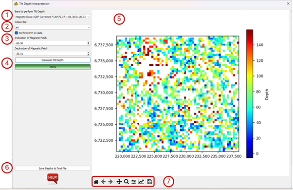

Tilt Depth Interpretation¶
The tilt depth interpretation (Salem et al 2007) is a technique for calculating depths to vertical sided bodies from the magnetic tilt angle. As such it required magnetic data as input.
The method works on the principle that the distance between the -45° and 45° tilt angles is twice the distance to the body. This zone of interest is highlighted on the map.
What is important to note is that this technique works best with data which has been reduced to the pole. For this reason, RTP has been built into the module.
The interface requires input parameters and displays the result:
Band to perform tilt depth – The band name in the raster file that contains the magnetic data.
Colour Bar – The user can select a colour bar for the display of the results.
Perform RTP on data – A toggle box allow the user to choose whether the data must be reduced to the pole. If this option is selected the user must provide the following inputs:
Inclination of Magnetic Field – Magnetic inclination at the date of the survey.
Declination of Magnetic Field – Magnetic declination at the date of the survey.
Calculate Tilt Depth – Calculate the tilt depth or recalculate after changing inclination or declination.
The calculated tilt depths are displayed in the map window.
Save Depths to Text File - The results can be output to a CSV text file, with columns x, y, id and depth. In this case, id refers to a contour identification where the tilt angle is equal to zero.
Standard image display settings that allow the user to zoom into specific areas of the image, move the zoomed in area around, return to the full image, save the image, etc.

References¶
Ferreira, F., Souza, J., Bongiolo, A., Castro, L. (2013). Enhancement of the total horizontal gradient of magnetic anomalies using the tilt angle. GEOPHYSICS. 78. J33-J41. 10.1190/geo2011-0441.1.
Salem, A., Williams, S., Fairhead, J. D., Ravat, D., & Smith, R. (2007). Tilt-depth method: A simple depth estimation method using first-order magnetic derivatives. The Leading Edge, 26(12), 1502. https://doi.org/10.1190/1.2821934